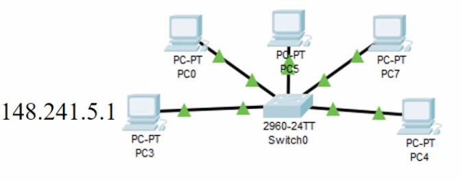

EN realida se llama red TCP/IP
Que es una direccion IP?
Esta conformada por 32 bitsy funciona con un agrupamiento logico caracteristico.
8 bits = 1 byte
8x4 = 32 bits
4 bytes separados por un punto.
ej:
148.241.32.100 -> Nota: Este formato es para la comprension humana. Solo pasalo a binario para tener la direccion IP
Esta es la version mas vieja del internet.
Cual es el rango de valores?
0-255
Los primeros bits describen la red, y los ultimos describen los aparatos conectados.

Las direcciones IP son irrepetibles. Petenece a un grupo y a un individuo..
¿Como se si dos redes pertenecen a la misma red?
Esto es la mascara de subred. Es un filtro donde puedo pasar al grupo y eliminar los bits del individio.
A la mascara de red se le conoce como tambien como soft mask o mascara subred.
255.255.255.0
IP : Internet Protocol
Mascara de subred and Ip = Direccion de Red


La direccion de red (grupo) es variable para cada grupo e identifica al grupo completo.
Que se requiere para que el internet funcione?
Direccion IP
Mascara de subred
Los probee el administrador de red.

El cuadrito amarillo es el home getaway.

Esto es mejor para el diseño de redes.